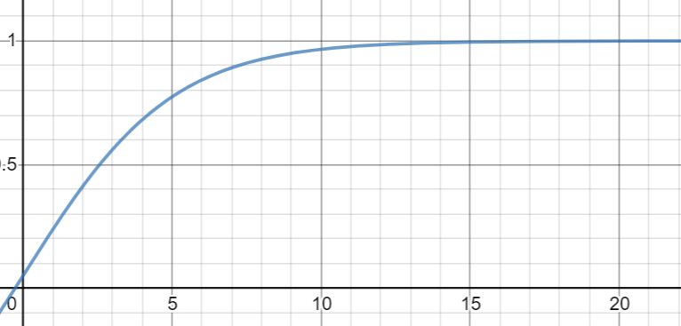
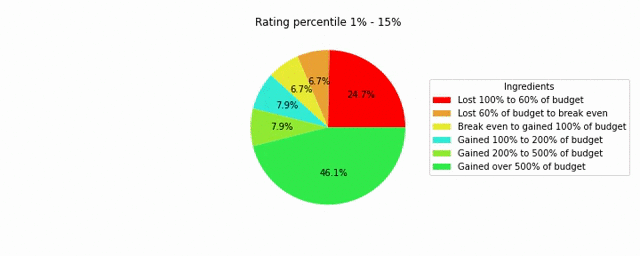
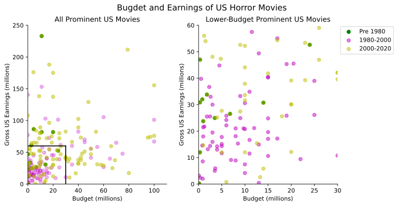
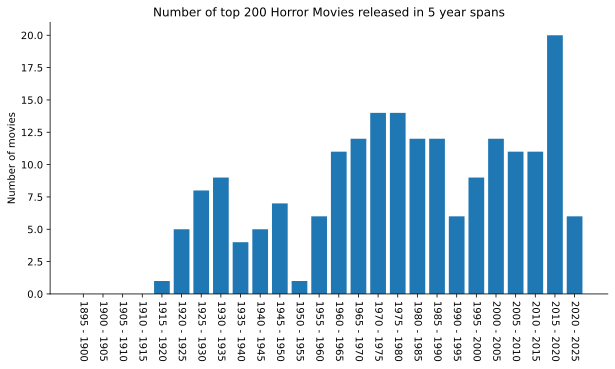
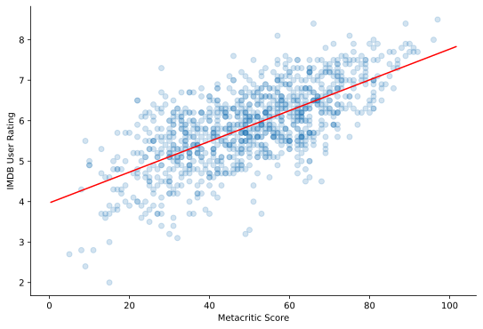
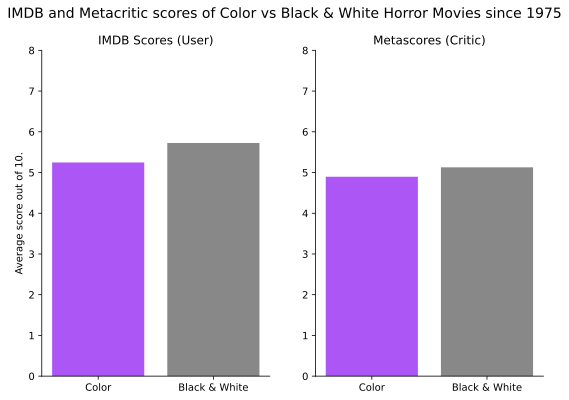

Results
Before reading, read this note on some terminology used, and this note on lurking variables.
How prevalent have horror movies been over the years?

This is a trivial question, but understanding the simple volume of horror movies over the course of the years is important to keep in mind when looking at other questions. From the graph, one can see that Horror Movies have actually had an extensive history, with some of the very first being released in the 1890s, with a gradual increase through the 1950s. There was a large volume in the late 70s through late 80s, followed by a decline in the 90s and very early 2000s. After this point, we see a very significant increase through present day. Note: This final increase in horror movies produced could be attributed to decreased costs of making a movie, and a large rise in independent, "under the radar" films produced.
Which countries produce the most horror movies per capita?

The visualization above shows that it is primarily "Westernized" countries which produce more horror movies per capita, with the notable exception of Japan.
To determine the opacity of each country, (0.0 to 1.0), I apply the following formula and color map:
0.0 to 1.0
This results in the opacity curve below, where the x-axis is number of horror movies per million, and the y axis is the shade of each country, 1.0 being darkest and 0.0 being lightest. The highest number of horror movies per million residents was Iceland with 30.2 movies, but most countries fell between 0 and 2 horror movies per million, so I used this logarithmic-like curve highlight the differences for these countries. It also ensured that every country with any horror movies had an alpha of at least 0.05.

Note: Some countries listed in the IMDB information had no modern day direct equivalent in the library I used to create the above map. In these cases, I added the number of movies from those countries to the most equivalent country I could find. Below are the mappings I used to account for these special cases.
| IMDB | Liechten-stine | Yugo-slavia | Singapore | Hong Kong | Andorra | Czech Rebublic | Czecho- slovakia | Soviet Union | Malta | Monaco |
|---|---|---|---|---|---|---|---|---|---|---|
| geo pandas | Switzerland | Serbia | Malaysia | China | Spain | Czechia | Czechia | Russia | Italy | France |
How prevalent are different genre pairings with horror movies over time?

In the data I collected, more often than not there was more than one genre specified. This graph shows the proportion of horror movies paired with different genres over time. There are several trends you could pull out of this chart, like the clear dominance (60% of movies!) of sci-fi horror in the 1950s - often thought to stem from anxieties regarding scientific advancements- or comedic horror's peak in the late 1980s.
Note: Due to a limited number of movies and available data, the results pre-1920 likely don't represent the variety of the genre very well.
Are some genre pairings of horror movie more profitable than others?

The stacked bar plot depicts what proportion of movies gained / lost money among the same genre pairings shown in the previous graph. Across the board, it appears that the majority of horror movies at least broke even, with smaller variations between different genre pairings. It appears that the genre whose movies are least likely to break even is crime-horror, and the most profitable genre overall is mystery-horror.
How does movie quality (rating) impact profitability?

This animation shows how the profitability of horror movies changes as IMDB user ratings increase. At any given frame, profitability data from 15% of movies are shown, starting with the lowest rated 15% to the highest rated 15%. This data demonstrates that at any rating, the majority of horror movies are profitable, but the proportion of those losing money is reduced from 30% for the worst reviewed movies to only 15% for the best reviewed movies.
How are total budgets and earnings changing in horror movies over time, in the United States?

This plot shows the distribution of budgets and earnings of the most prominent horror movies in the US. Generally speaking, movies released in the past two decades have had the largest budgets and earnings compared to movies released prior to 2000. Despite their comparatively lower budgets, horror movies pre-1980 seem to be very profitable, as most have earnings which far exceed their budget.
Are prominent / popular horror movies better than most?

This plot compares the distribution of ratings amongst prominent horror movies and all horror movies. In this case, the most prominent are the 5 movies with the most ratings in a given year, across all years. The ratings of the prominent horror movies are centered at 7 out of 10, whereas the distribution for all horror movies are clustered around 5.5 out of 10. This indicates that the most prominent horror movies are generally considered better.
Are we living in a Horror Movie renaissance?
 This plot shows how many of IMDB's top 200 rated horror movies of were released in a given 5 year period. While quality of the movies in a time period is relatively subjective and can depend on societal trends, almost 10% of the top 200 horror movies of all time were released from 2015 to 2020, less than 5% of the total time throughout which horror movies have been produced.
What is the relationship between user and critic ratings in horror movies?

The scatter plot above depicts the IMDB user ratings and Metacritic scores for over 1000 horror movies produced. The relationship is clearly positive and linear, with higher Metacritic scores predicting higher IMDB scores. The regression line for this linear relationship can be represented (roughly) with . It is worth noting that the distribution of Metacritic scores is wider than that of the user ratings, with Metacritic scores having a range of 9.0 (on a 10 point scale) and IMDB scores having a range of only 6.5. This may be due to the fact that for user reviews, there will be a significant number of people who rate a movie as 10/10 or 0/10, thus bringing the average score of a movie closer to a middling score.
When chosen for artistic purposes, are black and white horror movies, perceived to be better than color movies?

Pictured above are the average IMDB user ratings and Metacritic scores of both color and black & white horror movies published after 1975. I chose only to examine movies released after 1975 because after 1975, releasing a film in black and white was almost certainly an artistic choice rather than a technical limitation. It appears that both critics and regular users rated black & white films better than color films. One interesting point is that the disparity is greater amongst regular users than movie critics, possibly because users are more "susceptible" to the novelty that black and white horror movies have.
Terminology
Prominence / Most prominent movies: I consider a movie prominent if it has a larger number of IMDB user ratings compared to other movies released in the same year. This is to account for the fact that more recently released movies will have more likely have reviews than older movies.
Metacritic Scores: Metacritic is a website that collects and aggregates reviews from at least somewhat reputable reviewers, like those from magazines, news outlets, and professional critics. Metacritic creates a score for each movie as a weighted average of all those critic's reviews.
Potential Lurking Variables
It is important to note that even after collecting information on over 4,000 movies, this data is far from complete in a few ways. Keep these things in mind:
I collected information on 4,000 movies, and the way that my web scraping technique worked, it was more likely to find information on prominent movies than more "niche" ones.
IMDB is an originally English language website, and as such, likely has more information on English language movies and movies from countries with strong ties to "western" culture.
IMDB does not have comprehensive information on every movie I looked at. This has several consequences:
- Most movies I collected information do not have budget and or earnings information. Particularly, many older movies, and smaller, lesser known movies don't have this information. For profitability charts, I could only include movies with both budget and earnings information. This likely biases the charts on profitability, skewing them to look like horror movies are more profitable than they in fact are.
- Some movies do not have ratings information, especially Metacritic scores.
I did not adjust for inflation, or alternate currencies in budget and earnings data.